庆祝中国共产党建党九十五周年
 24小时服务热线：
123-456-7890
24小时服务热线：
123-456-7890
文学主题活动
中共中央委员、中国作家协会主席铁凝赴江西赣南开展重走长征路系列文学主题活动
http://www.chinawriter.com.cn 2015年12月12日23:13 来源：江西文艺12月11日上午，江西赣州在雨后微寒的天气中，迎来了中共中央委员、中国作家协会主席铁凝。铁凝主席此行将就如何将中国作家“深入生活，扎根人民”主题实践活动进一步引向深入、全面把握基层文学工作情况在江西多地进行调研。
中国作家协会办公厅主任胡殷红、创联部主任彭学明、作家出版社社长葛笑政、中国作家协会创联部综合处副处长范党辉等随行。
上午11点，铁凝主席一行抵达，没有作片刻休息，便在江西省文联党组书记、常务副主席汪天行，省文联主席叶青，赣州市委常委、宣传部长胡雪梅等人陪同下，从机场直奔87岁高龄的著名作家罗旋家中探望。铁凝主席关切地询问了罗老的身体、生活和创作等情况。得知罗老不仅身体硬朗而且还在对以往的文学创作进行整理和出版，铁凝主席很高兴，她向这位长期坚持深入生活、为人民写作的老作家致以深深的敬意，深情祝愿老作家健康长寿，文学之树长青，为人民创作更多的优秀作品。
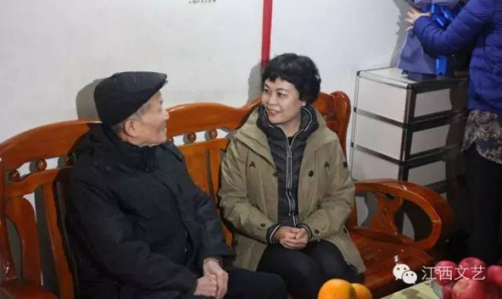
铁凝主席看望八十七岁高龄的曾获全国优秀短篇小说奖的赣州老作家罗旋
午后，铁凝主席一行马不停蹄又赶往于都县，出席中国作协在红军长征出发地于都举办的纪念建党95周年、红军长征胜利80周年系列文学主题活动启动仪式。
2016年适逢中国共产党建党95周年、红军长征胜利80周年，中国作家协会将把纪念建党95周年、红军长征胜利80周年作为2016年“深扎”活动的重要主题，开展一系列文学主题活动，组织作家分别沿着当年红一方面军、红二方面军、红四方面军和红二十五军的长征路线，重走长征路，感受长征精神，讴歌时代巨变。为精心部署这一系列文学主题活动，铁凝主席一行来到江西、来到赣南革命老区，来到了长征出发的地方。
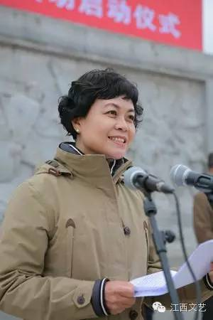
铁凝主席在纪念建党95周年、红军长征胜利80周年系列文学主题活动启动仪式上作重要讲话
赣州市委副书记、市人民政府市长冷新生在纪念建党95周年、红军长征胜利80周年系列文学主题活动启动仪式上致辞
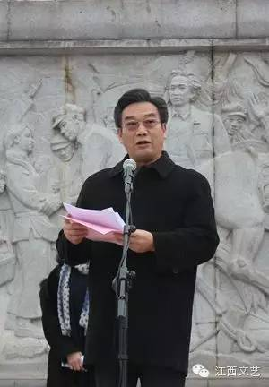
汪天行书记主持纪念建党95周年、红军长征胜利80周年系列文学主题活动启动仪式
启动仪式由汪天行书记主持。赣州市市长冷新生和叶青主席先后致辞，作家代表彭学军发言。
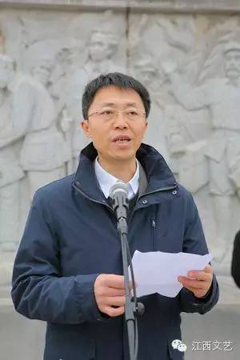
叶青主席在纪念建党95周年、红军长征胜利80周年系列文学主题活动启动仪式上致辞
叶主席首先代表江西文联、作协和江西广大作家热烈欢迎铁凝主席一行深入江西考察调研，对中国作协多年以来对江西人民和红土地的厚爱与支持，致以崇高敬意。他感谢中国作协近年来多次组织全国作家深入江西开展采风创作活动，并对江西重大文学创作予以大力扶持。他希望江西的作家们要借此机会虚心向全国同行学习，不断创作出更多更好具有江西特色、江西风格、江西气派的文艺精品，更好地满足人民群众日益增长的精神文化需求，以文艺创作的新成绩，为江西经济社会发展助力，为实现中国梦提供强大的精神动力和文化支撑！
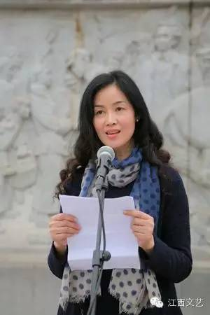
作家代表彭学军在纪念建党95周年、红军长征胜利80周年系列文学主题活动启动仪式上发言
彭学军说，贯彻落实习总书记在文艺座谈会上的讲话，深入生活，不仅要“身入”，更要“心入”，“情入”，重走长征路便是最为盛大最为踏实的实践方式，它值得我们付出全部的热忱和心力，去感受我们民族生生不息，不屈不挠的精神内核。用它来强健我们的脊梁，照亮我们的笔端，为社会、为人民奉献出有艺术生命力和时代正能量的优秀之作。
铁凝主席在启动仪式上发表了重要讲话。她说，在于都举行纪念建党95周年、红军长征80周年系列文学活动的启动仪式，是因为于都是中央红军大部队长征的出发地，我们可以在这里最真实、最直接地感受到当年长征的气息、氛围和精神磁场，感受到当年老区人民母送子、妻送夫、父子兄弟同长征的动人场景，有特别的价值和特殊的意义。
她说，我们相聚这块神圣的热土，也是为了接生活的地气，连人民的情意，知时代的冷暖，掘文学的富矿。我们一定不辜负大家的期望，用我们的笔和爱，书写好长征精神，书写好人民生活，书写好时代巨变。她预祝纪念中国共产党成立95周年、红军长征胜利80周年系列文学主题圆满成功，祝福赣南人民吉祥美好！
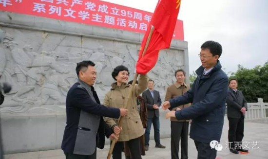
铁凝主席向参加重走长征路采风活动的作家代表授旗
启动仪式上，铁凝主席向参加重走长征路采风活动的作家代表授旗。
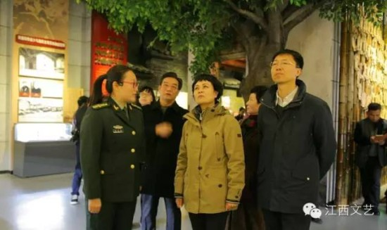
铁凝主席，汪天行书记，叶青主席参观中央红军长征出发纪念馆
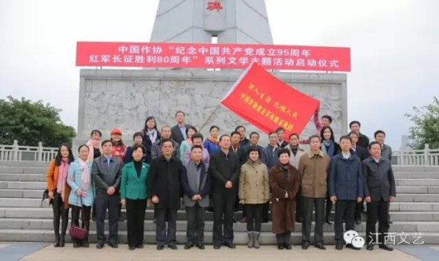
作家们在纪念建党95周年、红军长征胜利80周年系列文学主题活动启动仪式启动仪式上合影
中国作协及江西省文联、省作协有关同志、赣州市及于都县有关领导、作家代表、中央及赣新闻媒体以及赣州和于都的干部群众共100多人出席启动仪式。仪式结束后，铁凝主席参观了中央红军长征出发纪念园、纪念馆和长征前夕毛泽东同志旧居。
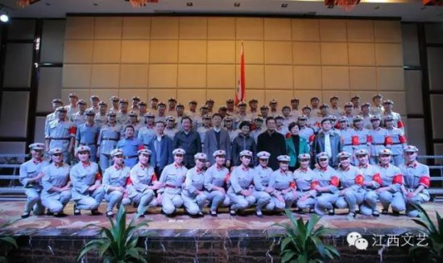铁凝主席，汪天行书记，叶青主席，赣州市宣传部长胡雪梅等领导与长征源合唱团《长征组歌》演员们合影
当晚，铁凝主席一行还观看了全部由红军后代组成的长征源合唱团深情表演的《长征组歌》。
12日早餐后，铁凝主席一行便奔赴共和国摇篮、中华苏维埃共和国临时中央政府诞生地瑞金。
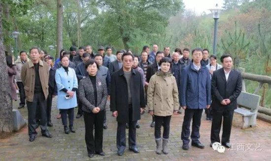
铁凝主席，汪天行书记、叶青主席等在叶坪乡黄沙村后山红军烈士纪念亭前，向烈士默哀致敬。
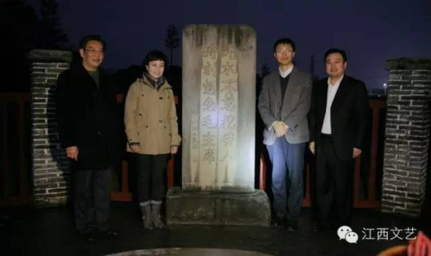
铁凝主席、汪天行书记、叶青主席、瑞金市委书记许锐在红军井前合影
在瑞金，铁凝主席参观了叶坪旧址群、红井旧址群、“二苏大”旧址、叶坪乡黄沙村华屋的烈士旧址。在黄沙村后山，十七棵青松巍然屹立，那是十七位烈士离开家乡时植下的信物。听着讲解员的讲述，铁凝主席神色凝重，与现场的作家们一起在后山的红军烈士纪念亭前，向烈士默哀致敬。

在叶坪乡黄沙村华屋，铁凝主席代表中国作协向瑞金两个红军村分别捐赠3000册图书
在叶坪乡黄沙村华屋，铁凝主席代表中国作协向瑞金两个红军村分别捐赠3000册图书，并举行了捐赠仪式。
在瑞金文学艺术院召开了中国作协江西基层文学工作座谈会
下午，在瑞金文学艺术院召开了中国作协江西基层文学工作座谈会，铁凝主席就如何进一步深化拓展中国作家“深入生活，扎根人民”主题实践活动与当地基层文学作者展开了座谈，进行了交流。参加座谈的市县两级作协负责同志、本土农民作家、红军后代作家六十余人。
铁凝主席一行此次来江西，将进行为期六天的考察调研行程。此后她将深入鄱阳、婺源、景德镇等地考察调研。还将赴南昌等地看望老作家和优秀青年作家代表，了解江西基层文学工作情况，把握基层文学工作动态。
近年来，中国作协十分重视江西文化资源，多次在江西举办重大文学活动。2005年，中国作家协会在江西启动“重访长征路，讴歌新时代”——中国作家大型采访活动；2010年，中国作协在江西等地开展中国作家“走进红色岁月”大型采访活动；今年4月，中国作协组织56个民族作家红色赣州行采风团，深入赣南老区采风。这次铁凝主席赴江西进行文学考察调研，充分体现了中国作协对江西文学发展的深度关切、大力支持和殷切期望。
 微信关注
微信关注